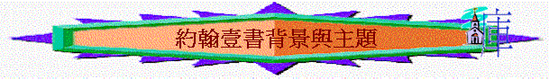

一.作者：使徒約翰
～沒有署名，但從整體書之文法及口吻，應是寫約翰福音的作者約翰
1.外証
～早期教會常引用書中的話，並承認是出自約翰(例如坡旅甲、愛任紐也引用，而俄利根說約翰除寫了約翰福音、啟示錄外，也寫了一封短書信，並寫了第二封、第三封信。
2.內証
～書信內容與字句有很多和約翰福音吻合
|
約翰福音 |
相同內容與字句 |
約翰壹書 |
|
1:1-2 |
道與神同在 |
1:1-2 |
|
15:11 |
喜樂充足 |
1:4 |
|
5:38 |
道不在心裡 |
1:10 |
|
14:21-24 |
遵守主的命令 |
2:4-6 |
|
15:4 |
常在主裡面 |
2:6 |
|
13:34 |
彼此相愛 |
2:8,3:11 |
|
1:5,9 |
黑暗、光明 |
2:8,10 |
|
5:23,15:23-24 |
不認子也不認父 |
2:23 |
|
14:26 |
恩膏的教訓 |
2:27 |
|
5:24 |
出死入生 |
3:13-15 |
|
2:31 |
信子就有永生 |
5:13 |
二.寫作時間
～書中沒有交待
～但應是約翰年老時，因為他有用長輩式口吻教導晚輩(2:13、18)
～而根據古今解經家，他們認為此書是約翰年邁時(約主後90年後)寫的
三.寫作對象
～沒有註明寫給那間教會，那群信徒
～但從書中內容，我們可以看到收信對象有以下特點
1.他們曾聽見永生之道
「我們將所看見、所聽見的傳給你們，使你們與我們相交。我們乃是與父並他兒子耶穌基督交的。」1:3
2.他們曾是認識父，是屬於神的
「父老啊，我寫信給你們，因為你們認識那從起初原有的。少年人哪，我寫信給你們，因為你們勝了那惡者。小子們哪，我曾寫信給你們，因為你們認識父。」約壹2:13
3.他們曾是得勝的信徒
「父老啊，我曾寫信給你們，因為，你們認識那從起初原有的。少年人哪，我曾寫信給你們；因為，你們剛強，神的道常存在你們心裡；你們也勝了那惡者。不要愛世界和世界上的事。人若愛世界，愛父的心就不在他裡面了。」2:14-15
4.他們不只一次收過約翰所寫的信
「父老啊，我寫信給你們，因為你們認識那從起初原有的。少年人哪，我寫信給你們，因為你們勝了那惡者。小子們哪，我曾寫信給你們，因為你們認識父。」2:13
5.他們有老年人，少年人
～因此此卷書不同約翰福音，約翰福音似乎也寫給未信人，叫他們認識耶穌是神的兒子得永生，而約翰壹書的對象已是信主並曾得勝的人，不是向他們傳福音，而應有更進步的真理想向他們表達。
四.本書特點
1.沒有一般書信開頭的問安和結束的祝福問安字句
～可能不單是寫給一間教會，是眾教會也應知的書
2.多正反面說明真理
～如光明與黑暗，真理與虛謊，愛與恨，神的兒子與魔鬼的兒女，真理的靈與謬妄的靈
～可能因為當時信徒也面對異端(假信徒)的衝激，所以作者多用正反表明真信徒與假信徒的分別
3.重覆內容
～本書有一些人讀完約翰壹書後，也覺得書中內容不斷重覆，欠缺結構，但若仔細再深入觀察，卻發現書中內容不斷重覆及是有意思。
～例如書中時常會重覆「公義」、「愛心」、「信心」內容，其實如「縲旋形梯」一般，常繞著心中，也回到主題，一層比一層加深，令我們更可以在每一層，用同樣方向，但不同層次角度上更闊認識主題。
五.本書主題----永生的確認與流露
1.經文直接的說明
A.叫他們喜樂充足
「我們將這些話寫給你們，使你們（有古卷：我們）的喜樂充足。」約壹1:4
B.叫他們不犯罪
「我小子們哪，我將這些話寫給你們，是要叫你們不犯罪。若有人犯罪，在父那裡我們有一位中保，就是那義者耶穌基督。」約壹2:1
C.叫他們知道自己有永生
「我將這些話寫給你們信奉神兒子之名的人，要叫你們知道自己有永生。」約壹5:13
～以上是經文直接表達(我將這些話寫給你們)本書寫成的目的
～我們先瞭解為何約翰對一班已信主及曾得勝的信徒，仍要談及像初淺的「生永」道理
～約翰壹書所講的永生和我們今日單是講信主得永生(上天堂)有些不同
～作者所題及的「永生」指人有了神兒子有的生命，而「住在主裡」、「在主裡面」、「屬神」、「與神相交」、「永遠的生命」也就是永生。
～而信徒可能仍受異端影响，懷疑自己有否永生，及當時信徒可能認為有了永生已足夠，不需有甚麼表現
～所以作者要他們更確知自己有永生，以致他們及信徒也可以因確認自己有永生及流露美好生命而喜樂！
2.書中重覆的字眼
A.「知道」「曉得」等類似字(至少41次)
「你們若知道他是公義的，就知道凡行公義之人都是他所生的。」約壹2:29
「我們知道凡從神生的，必不犯罪，從神生的，必保守自己（有古卷：那從神生的必保護他），那惡者也就無法害他。」約壹5:18
B.「住在主裡面」「住在光明中」等字眼
「人若說他住在主裡面，就該自己照主所行的去行。」2:6
「愛弟兄的，就是住在光明中，在他並沒有絆跌的緣由。」2:10
「遵守神命令的，就住在神裡面；神也住在他裡面。我們所以知道神住在我們裡面是因他所賜給我們的聖靈。」3:24
C.「遵守祂的命令」命令等字眼
「我們若遵守他的誡命，就曉得是認識他。」2:3
「我們若愛神，又遵守他的誡命，從此就知道我們愛神的兒女。」5:2
D.「罪」
「我們若說自己無罪，便是自欺，真理不在我們心裡了。」1:8
「凡從神生的，就不犯罪，因神的道（原文作種）存在他心裡；他也不能犯罪，因為他是由神生的。」3:9
E.「愛」
「凡遵守主道的，愛神的心在他裡面實在是完全的。從此我們知道我們是在主裡面。」2:5
「親愛的弟兄啊，我寫給你們的，不是一條新命令，乃是你們從起初所受的舊命令；這舊命令就是你們所聽見的道。」2:7
「親愛的弟兄啊，我們應當彼此相愛，因為愛是從神來的。凡有愛心的，都是由神而生，並且認識神。」4:7
F.「生命」「永生」
「人有了神的兒子就有生命，沒有神的兒子就沒有生命。」5:12
「主所應許我們的就是永生。」2:25
～明顯作者想受眾知道自己有永生，而一個有永生的人是住在主裡，住在光明中，他應不犯罪，也要守主命令，主的命令是甚麼----就是愛，所以本書特別重覆以上字眼
3.當時時代的背景
A.有知識信徒卻沒永生表現
「我們若說是與神相交，卻仍在黑暗裡行，就是說謊話，不行真理了。」1:6
「人若說我認識他，卻不遵守他的誡命，便是說謊話的，真理也不在他心裡了。」2:4
「我們若遵守他的誡命，就曉得是認識他。」2:3
「人若說「我愛神」，卻恨他的弟兄，就是說謊話的；不愛他所看見的弟兄，就不能愛沒有看見的神（有古卷：怎能愛沒有看見的神呢）。」4:20
～本書時常重覆「人若說」類似字眼，可能當時信徒有很多真理知識及自己的看法，但他們卻沒實質表現，所以約翰要強調一個真正有永生的人應有的表現。
B.有異端興起引誘迷惑信徒
「小子們哪，如今是末時了。你們曾聽見說，那敵基督的要來；現在已經有好些敵基督的出來了，從此我們就知道如今是末時了。」2:18
「我將這些話寫給你們，是指著那引誘你們的人說的。」2:26
「親愛的弟兄啊，一切的靈，你們不可都信，總要試驗那些靈是出於神的不是，因為世上有許多假先知已經出來了。」4:1
～2:18題及好些敵基督的出來，當時信徒不單受到猶太人的律法主義，羅馬的帝國主義，希臘的神話哲學思想衝激，他們也要面對異端的似是而非迷惑
～而其中最衝激當時的信徒是「偽智派」(Gnostics----又稱諾斯底派)，他們有以下錯誤的看法與觀點：
a.知識崇高
(1)知識比道德更高尚
～所以否認愛是基督徒是最高美德，而約翰卻指出愛才是認識神的印證。
～他們也否認聖經的倫理教訓，知識才是最重要，所以約翰壹書常重覆「若有人說」的字眼，信徒不單停留在言語及知識中，更要遵守主的命令，行出義行，才能印證自己有永生。
～他們也敎訓人：「犯罪可加多經驗，增廣知識」，但約翰卻強調與神相交的人，不可犯罪。
(2)福音中的奧秘，惟獨偽智派可了解
～他們認為普通信徒只能瞭解福音中字面的意義，最奧秘的事唯有他們才能確知，但約翰壹書卻強調永生及信仰的真理是信徒們己曉得及確知的！
b.物質極惡
(1)宇宙萬物是惡的
～他們認為至高神不會創造這樣萬惡的宇宙。
～所以舊約創造宇宙的神，卻非至高的神，乃是低級的勢力。
(2)否認基督成了肉身
～他們認為肉身是惡的，所以基督道成肉身是難以置信，所以有人說基督只是幻影，非實在的，有人說耶穌是從約瑟與馬利亞而生的，當耶穌受死，基督才降臨，但當耶穌受苦承擔人罪時，基督已離開，約翰壹書卻強調基督曾成了肉身來，是人親眼看過及摸過(1:1)，他也曾受洗、受苦的(不是二分法)
～因此，當時信徒受異端衝激，可能會否定過往所信，可能會重知識不重行為，可能仍覺得對信仰對永生有很多不知道的地方
～所以約翰壹書強調信徒是可以確認自己有永生，並且不要受迷惑，真正住在主裡面的人是有行為的、有愛、有義及不犯罪的！
～作者也會令信徒確認誰是真的有永生信徒，誰是假的信徒(異端)
4結構脈絡的印證
～若我們假設約翰壹書的主題是「永生的確認與流露」，我們看一看經文的脈絡可否印証及連貫這主題
(1)永生的源頭(1:1-4)
～一開始談及永遠生命，生命之道的源頭
(2)永生的真偽(1:5-2:27)
～此段強調若有人說真是與神相交，住在光明中，他應有真實的行為表現，相反在末時，會有一些假的信徒(他們是虛謊的)迷惑信徒，信徒要清楚分辨
(3)永生的表現(2:28-3:
～此段強調一個在主裡面，已出死入生的信徒應有的表現，行義不犯罪與相愛貫質！
(4)永生的明證(3:24b-5:12)
～此段強調一個信徒當他有聖靈，有神的愛，有信心時就幫我們見証我們是神的兒女，是屬於神
(5)永生的確認(5:13-22)
～此段講述當我們有了以上事情及表現：我們就確認知道自己有永生及永生的應許
～所以，我們從整個結講中，發現整卷書內容會有重覆的，但也是同時環繞著永生、住在主裡面的方向
六.大綱圖表
|
永生的確認與流露 |
||||
|
永生的源頭 |
永生的真偽 |
永生的表現 |
永生的明證 |
永生的確認 |
|
1:1-4 |
1:5-2:27 |
2:28-3: |
3:24b-5:12 |
5:13-22 |